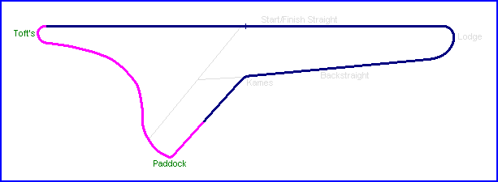
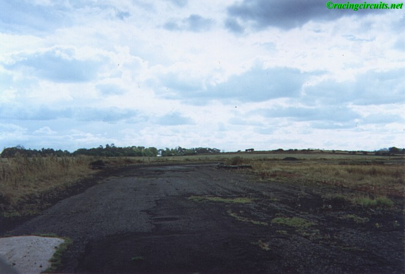
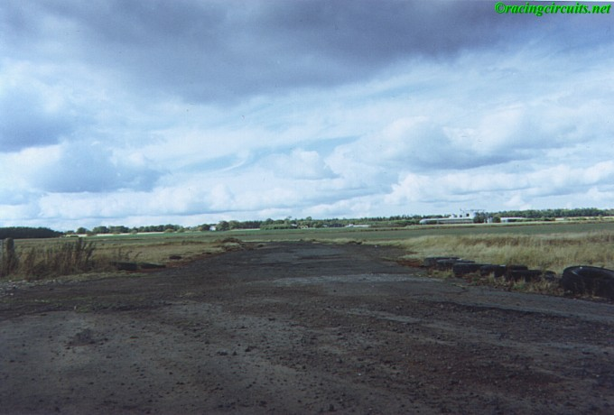
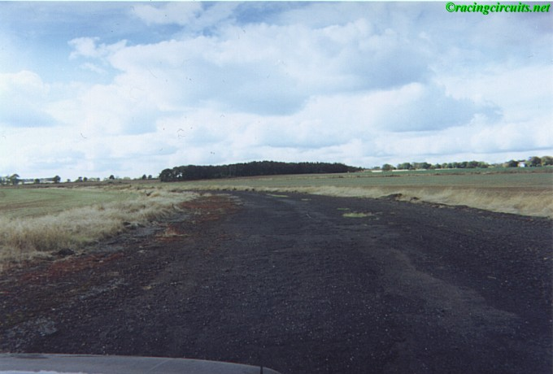
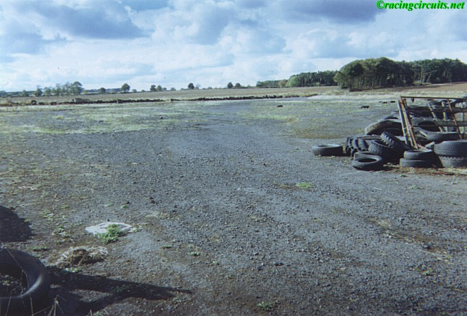

Paddock bend. Driver Jack Walton commented that this area was quite stony during the the first events held here.
Charterhall - Paddock Bend & Toft's Turn
|| Contents | Start/Finish Straight & Lodge | Backstraight & Kames | Paddock Bend & Toft's Turn || Home ||
Click on corner names above to view photographs of that section.


Approch to Paddock Bend
Paddock bend. Driver Jack Walton commented that this area was quite stony during the the
first events held here.

Exit of Paddock bend

Sweeping left on the run to Toft's

The entry to Toft's turn, a slightly off-camber sweeping right to rejoin the Start/Finish
straight
©racingcircuits.net - All rights reserved.